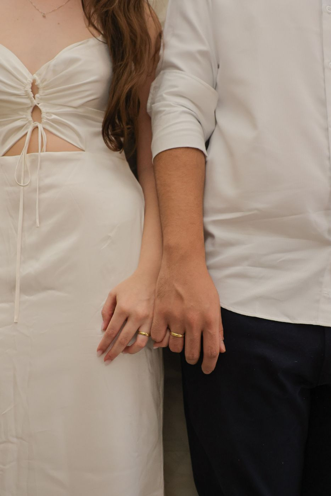
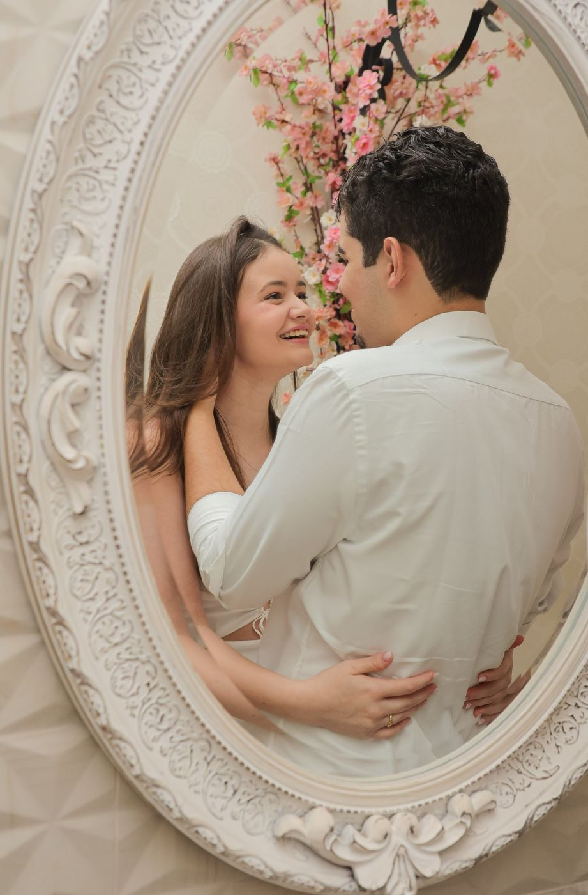
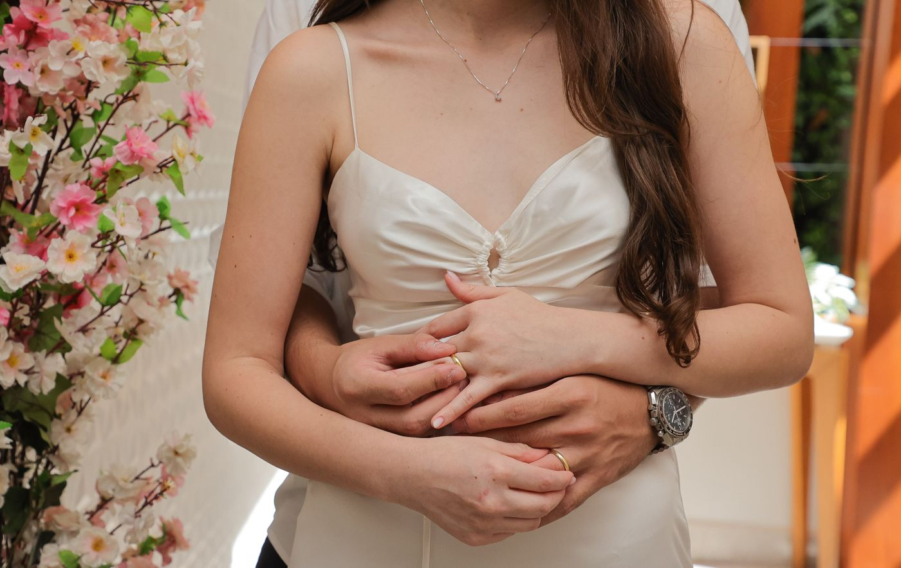

Fotos
Casamento civil no cartório
Retratos do casal: momentos espontâneos, detalhes e composição.





Vídeos
Em movimento
Vídeos verticais para Instagram e stories. Toque em um vídeo para assistir completo, com som.
Próximo passo
Quer esse olhar no seu negócio?
Fale com o time e conte o que você precisa.